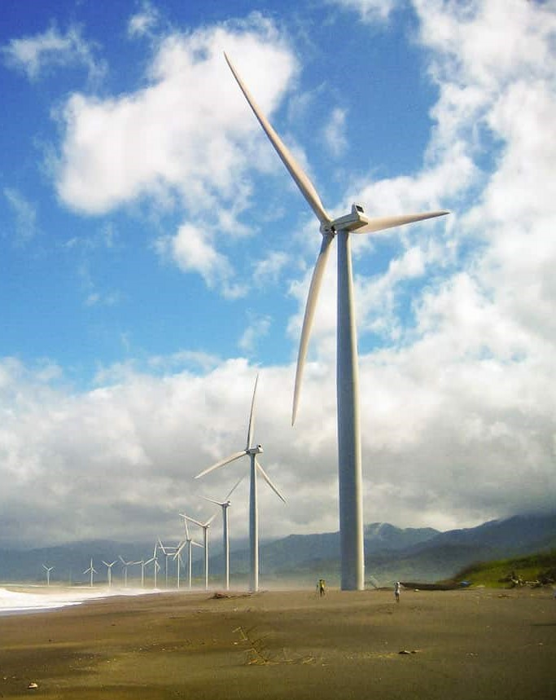

Region 1, also known as the Ilocos Region, is located in the northwestern part of the island of Luzon in the Philippines. It is composed of four provinces: Ilocos Norte, Ilocos Sur, La Union, and Pangasinan. The region is known for its rich history, cultural heritage, stunning landscapes, and beautiful coastlines.
Ilocos Norte is the northernmost province in the region and is famous for being the birthplace of former Philippine President Ferdinand Marcos. It is home to several historical landmarks, including the UNESCO World Heritage Site of Paoay Church, a stunning example of Spanish colonial architecture. Other attractions in Ilocos Norte include the sand dunes of Paoay, the Cape Bojeador Lighthouse, and the Malacañang of the North.
Ilocos Sur, located south of Ilocos Norte, is another province with a rich historical background. Its capital city, Vigan, is a UNESCO World Heritage Site and is renowned for its well-preserved Spanish colonial architecture. Visitors can explore Calle Crisologo, a street lined with ancestral houses, and visit the historic sites such as the Bantay Church and Bell Tower.
La Union is a province known for its beautiful beaches and surfing spots. The town of San Juan is particularly popular among surfers, attracting both locals and tourists. Aside from surfing, visitors can also enjoy other water activities like paddleboarding and kayaking. La Union is also known for its vibrant arts scene and annual surfing festivals.
Pangasinan, the largest province in the region, offers a diverse range of attractions. Its capital, Lingayen, features the Lingayen Gulf, a popular spot for beachgoers. The Hundred Islands National Park in Alaminos City is a must-visit destination, consisting of numerous small islands and islets with crystal-clear waters and white sand beaches. The province is also known for its delicious seafood and the annual Pista'y Dayat (Sea Festival).
Overall, the Ilocos Region is a treasure trove of history, culture, and natural beauty. It offers a mix of historical landmarks, charming towns, beautiful coastlines, and exciting outdoor activities, making it a captivating destination for travelers.